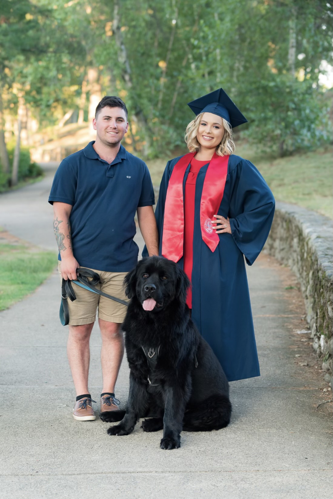

Right now I am currently working full time active duty in the coast guard as a Second Class Boatswains Mate. I run search and rescue missions for the boating public of the Newport Rhode Island area. I have more than 4 years of active duty time I believe my time in the coast guard has given me great ablility to work as a team to work through situation and great leadership qualities by running and coordinating search and rescue missions for multiple search and rescue assests at a time.
I'm married to my wife Alexandra for almost two years now she is a teacher for the 4th grade. We have a 3 year old newfoundland whose name is bubba. I am also from Pawtucket, Rhode Island born and raised.


I am planing on getting out of the Coast Guard in a year and a half so I was looking for stuff to do and I was always very interested in computers and always wanted to work with them then I found out about coding bootcamps and thought that would be a great way to quickly transition from my job in the Coast Guard to a tech job and found devCodeCamp. Currently enrolled in devCodeCamp's fullstack developers course and hopefully being able to land a job as a junior developer somewhere and begin my career in tech. Im alittle more interested in being a front end side developer but I also find back end type development also pretty interesting.